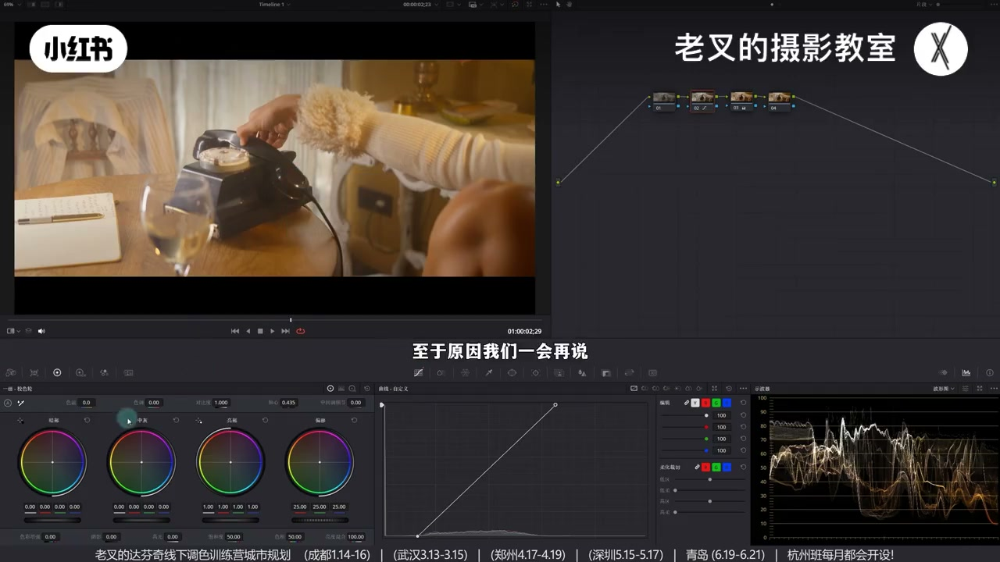
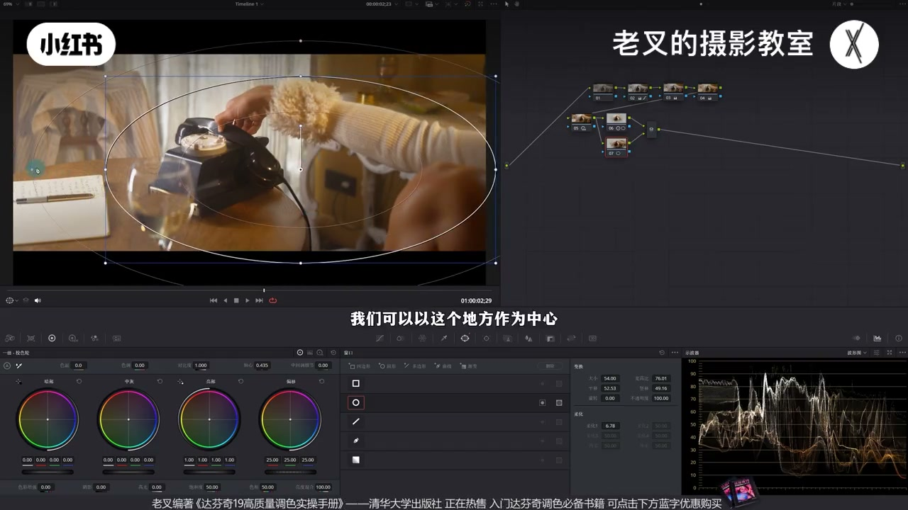
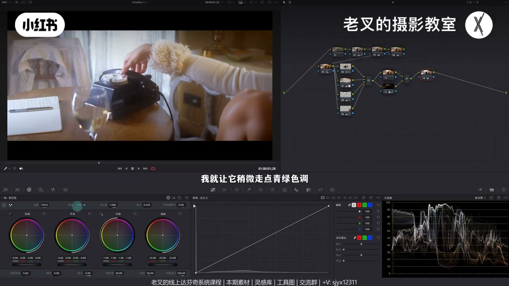
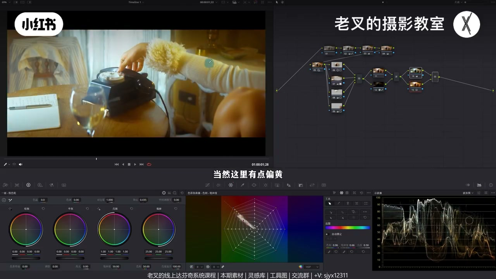
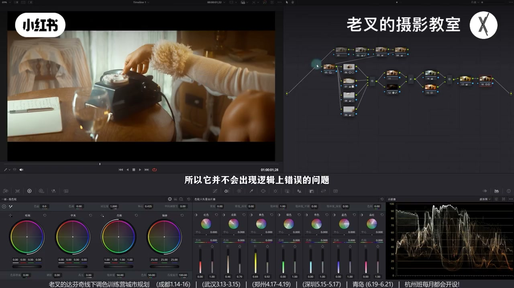

内容要点
老叉回应学员「冷暖反差怎么调都怪」：能变冷的通常只有暗面或本色偏冷的物体；受光暖色硬染成画面最冷必然假。正确顺序是先校正白平衡保留色相差，再还原后加暖；用 HDR 柔化影调、大遮罩+暗角强化中心，再全局加冷并用并行节点找回暖色饱和——按本色分区染色，而不是按一级轮曝光分区硬染。
知识结构
冷只在暗面/本色冷；先校白平衡再加暖，保留色相差。
降 Light/Shadow、回 Highlight；大遮罩对比度+轴心，并行暗角。
Alt/Option+S 串行 + Alt+L 图层改屏幕，高斯模糊+曲线控力度。
缺冷就全局加冷（可偏青绿）；并行节点找回暖色饱和。
可再全局微暖；蜘蛛网纠黄、提密度；非一级轮曝光分区，逻辑更稳。
冷暖反差不是硬把受光暖色染成最冷，而是找出「能冷」的本色/暗面：先校白平衡保留色相差，影调到位后全局加冷、并行找回暖。比一级校色轮按曝光硬分区更安全。
00:00-02:10立题：能变冷的只有暗面或本色冷
线下训练营学员想做冷暖反差却总觉得怪。老叉指出：画面能出现冷色，一般只有暗面，或物体本色偏冷；若本色本暖又处在受光面，硬染成画面最冷必然假。核心是「把能够变成冷的变成冷色」。
室内打电话素材先简单还原后仍偏暖：用不会因置景改色的窗户判断——偏暖说明是白平衡错误。2 号节点先校正白平衡（校正前可抓静帧对照），窗帘与白衣背光、电话本色归正。若仍喜欢最初的暖，在着色节点略加暖——这不是重复：先校再加暖，暖色区几乎不动，该冷的白/肤色能相对冷，保留色相差。

02:10-04:32影调：HDR 柔化 + 大遮罩提中心 + 暗角
还原后偏暗氛围更好：降 HDR 的 Light 与 Shadow，高光过闷再略抬 Highlight，Shadow 可回一点。电话主体不够突出时，中间大遮罩加对比度并配合轴心提亮。
Shift+P / Option+P 并行暗角：中心含右下腿，超大柔化后反转压四周；用对比度+轴心压暗以免牺牲本子高光，并略降饱和（对比度会抬饱和）。两节点此消彼长强化中心。闷则可给窗户略提高光滑块；膝盖太暗再并行微提。

04:32-05:12可选：白柔/黑柔柔化观感
明暗分区到位后若想更柔和：Alt/Option+S 建串行，再 Alt+L 建图层节点，合成模式改屏幕，下层拉满高斯模糊，用曲线控白柔力度，暗部可略走黑柔。可加可不加。
05:12-07:00冷暖：缺冷先全局加冷，并行找回暖
肤色、衣、桌、墙柜多为暖，不能硬冷；电话与窗户可略冷。缺冷就直接全局加冷，色调可偏青绿带复古。全局变冷时，本可冷的区域染蓝力度仍大于本暖物体。
并行节点把暖色饱和找回来：暖区几乎不受影响，能冷的变冷——冷暖都出现即可，不必一次把每个色做死；不够暖可再全局微暖。开关对比可见：全局偏暖同时该冷仍冷，思路与「校白平衡再染色」一致。


07:00-08:24收束：纠黄密度 + 对比还原
人物光太黄可用向量示波器（蜘蛛网）略往红、降黄饱和，并提黄/皮肤密度防过艳。该冷的冷、该暖的暖，且不按一级校色轮曝光分区，不易逻辑翻车。另有素材同思路；素材与课程见简介。

完整转录（367段）
以下文本由 Whisper medium 模型自动转录，可能存在少量识别误差，已尽可能修正。
冷暖反差
这种冷暖反差要怎么做
前两天结束了25年最后一期线下调色训练营
有一位学员回去之后
针对自己的项目
他想要做出冷暖反差
但是感觉怎么做都怪怪的
核心的点还是在于冷的地方
能出现冷的一般只会有两种情况
一般情况下
一个是暗面
另一个是物体本色微冷色
如果本色就是暖色
并且它处在一个受光面
你硬要把它变成画面中最冷的存在
这必然是会很假
所以冷暖反差核心的思路
其实是把能够变成冷的变成冷色
比如说这个画面
当我们给它简单做一下还原之后
能够看到整体颜色
还是按照前期置景的想法
总暖掉了
但是这种暖是场景的暖
还是因为白平衡不正确的暖
我们可以看一下画面中
不会因为置景而改变颜色的东西
比如说窗户
那此时这个窗户是有一点偏暖的
所以它这个其实是白平衡不正确的暖
我们要在2号节点
先给它校正一下白平衡
在校正之前
我给它先抓取个竞争
是原因我们一会再说
给它校正一下白平衡了之后
我们看到整体的颜色是不是就变干净了
窗帘窗户的颜色变成白色
而且像这种白衣服
它的背光面也不会像原本那样那么暖
电话也能够变成正常的颜色
也就是找出了它的本色
那如果你说
我还是觉得一开始的那种暖比较好看
那就可以考虑在4号节点
也就是著色节点上给它加一点点暖
加成这样差不多
你可能会觉得这不是一个重复行为吗
并不是
我们把刚刚校正白平衡之前的画面
来做一下滑向对比
你乍一看好像没什么变化
特别是在暖色部分
但是你仔细看
我们在这些该是冷色部分的
比如说白色的窗帘
以及它的肤色
还有这里白色的衣服
它该呈现白色的
它能够呈现白色
你会发现
如果说我们一开始保持白平衡错误的暖
会导致这些本该偏冷的物体
还是保持错误的颜色
但如果说你先给它校正白平衡
再给它调暖
一方面这些暖色部分几乎不受到影响
但是这些该是冷色的部分
能呈现出相对冷的结果
这个就是保留了它的色相差
这个色相差就是我们时刻要注意的内容
那此时我们就做好了还原的行为
接下来就可以考虑给这个画面
增加一点质感
加几个节点
拉到第二排
整体的影调
根据这个环境以及这个置景
还是觉得说偏暗点会好看一点
才符合氛围
让它整体能够柔和一点
所以我们可以给它稍微降低点
中晖部分的曝光
我这里选择的是降低H大色轮中
Light色轮的曝光
以及Shadow色轮的曝光
大概是这个结果
你会看到整体画面变得柔和了
对吧
但是高光压得太多
所以我们可以再稍微提高一点
Highlight色轮的曝光
这个就不用提太多了
让高光能够回来一点
不至于那么闷
大概是这个结果
我觉得挺好的
Shadow色轮可以回来一点点
此时画面就大体不错了
如果你觉得主体发生的地方
也就是电话这个区域
还不够突出
那你就可以考虑给它加一个遮罩
在后面这个节点中
给中间区域画一个
较大的一个遮罩
然后给它稍微加一点点对比度
配合轴心让它能够亮一点
好
大概是这个效果
然后你可以按住L的加P
或者是Option加P
来个并行节点
给四周加一个暗角
但大家要注意这个暗角
千万不要忽略了右下角
这里还有个腿的存在
我们可以以这个地方
作为中心给它画一个
超大柔化的遮罩
然后把它反转了
让它直映下四周
对于四周这个暗角
我觉得其实
这些周围的内容还是有用的
但我不希望它太亮
所以我们可以用增加对比度
然后配合轴心的方式
让它能够压暗一点
这样既不会牺牲掉
比如说本子上的高光
也能够让这些
本来处在暗面的四周
再次压暗
保留了它一定的光感
也稍微可以降低一点饱和度
因为增加对比度会增加饱和度
其实我们这两个节点的行为
就是来利用此消彼长的方式
来强化中间部分的提亮
你会发现
你的视线中心就变得更加明确
而且画面不会发灰了
对吧
最后如果你觉得
画面还是有点闷的话
其实可以考虑
一般来讲
我们有窗户
我们可以让它稍微亮一点
柔化记得开大
然后给它稍微提高一点
高光划快
大概是这个效果
其实还挺不错的
对不对
能够让画面中
有那么一点点小亮点
那此时
我们就让画面层次
变得更加立体了
也可以用还原后的画面
来做一下对比
这是我们还原后的画面
这是我们调完的画面
整体的一个氛围跟质感
就已经出来了
对不对
当然
如果你觉得
这个人物的膝盖太暗的话
也可以再来个并行节点
把人物膝盖
给它稍微提亮一点点
不需要太多
大概是这样
好度也可以稍微降一点点
既然此时
我们已经做出了明暗反差
也就是让这些亮的该亮
暗的该暗
那如果说
你想让画面更加柔和
其实可以考虑来个白柔
白柔怎么建
按住 Alt 加 S
或者是 Option 加 S
建立一个串行节点
然后再按住 Alt 加 L
建立一个图层节点
把图层节点的合成模式
改成绿色
然后在特效库中
搜索高斯模糊
把高斯模糊拉到下面这个节点
并且把高斯模糊的数值拉满
然后同样在下面这个节点中
用曲线来把这个白柔的力度
给它做一定的优化
稍微降低一点
暗部这边也可以走一点来
让它能够呈现出一个
黑柔的效果
我觉得大概这样的一个结果
还挺好的
能够有一点温柔的感觉
当然你不要就算了
问题也不大
接下来就可以考虑颜色了
我们是明确想要
冷暖反差的
我们此时看画面
可以变成冷色的是谁
你像人物的皮肤
人物的衣服
桌子
背景墙
这个柜子
还有左侧这里的墙
它都是暖色的
它们不能变成冷色
只有黑色的电话和窗户
可以稍微冷一点
而此时我们画面是
缺少冷色
既然缺少冷色
不用想太多
直接给画面
先加冷色
可以多加一点
色调也可以降一降
我就让它稍微走一点
青绿色调
还挺好看的
带那么一点复古的感觉
大概是这个效果
你看到此时
我们已经给画面
整体加冷了
对吧
最重要的一点就是
虽然画面此时
全局变成冷色
但是它们变成冷色的
幅度是有区别的
像这些可以变成冷色的
它们染上蓝色的力度
要大于这些
原本就是暖色东西
对不对
那也正因为如此
我们可以按住
2D加P
或者是Option加P
建立一个并行节点
来利用并行节点的方式
把这些暖色的部分
不好度给它找回来
大概是这样的一个结果
我们来看一下
调整前调整后
暖色部分
几乎不受到影响
当然这有点偏黄
没关系
不管它先
但是这些能变成冷色东西
它都变成了冷色
也就是说
此时冷色也有了
暖色也有了
其实我们在用
这个并行节点染色的时候
不用太纠结
一定要把每个颜色
做得特别到位
只要让颜色都出现
如果你觉得某一个颜色不好看
你完全可以后面
再建个节点单独调整
比如说
我现在觉得冷暖虽然都有
但我觉得它不够暖
我还是希望它整体
能够走暖掉
现在冷的太多了
那你就可以在后面来个节点
在冷与暖都有的前提下
给画面稍微加一点点暖
你这不是又做回去了吗
其实并不是
我们可以把这三个
调颜色的节点做下开关
你会发现
在我们做了这样一个
风格化调整了之后
能够保持全局偏暖的同时
还能让冷色的东西
依旧是冷色
这个其实和我们在一起校色
有还原阶段
还原白平衡
再全局染色思路
是一模一样的
再然后
如果你觉得
人物身上的光太黄了
你可以用蜘蛛网去纠正一下
当然你可以在17号节点
一起做
而我是为了掩饰区别
故意把它放在另外一个节点
把这里的黄
给它稍微往红色方向走一点点
稍微降一点点黄色的饱和度
大概是这个结果
也可以稍微提高一点
这些暖色元素的密度
让它们不要太艳
也就是提高一点黄色的密度
再提高一点皮肤的密度
同时让它们的饱和度
稍微降一点点下来
让它们不要太腻
你看
这样效果是不是挺好的
肤色也相对舒服
如果你觉得这里太黑的话
再给它回到9号节点
提亮点就好了
这个我就不多说了
此时我们就让画面
非常安全
并且高效的做出了冷暖对比
而且这样的冷暖对比
我们可以再把这几个节点
开关一下看一看
是不是效果非常好
这些该冷的冷
该暖的还是暖
而且我们并不是按照
曝光作为分区的
像1级交死轮那样
所以它并不会出现
逻辑上错误的问题
我们再与还原后的画面
做一下对比
这是还原后的画面
这是我们调整后的画面
还不错吧
对吧
还有一个素材
我们也可以用类似的思路
去做调整
这里我就不掩饰了
思路是一模一样的
这两个素材我也上传了
大家可以看
视频下方的小字来找我
还有WG的线上系统课程
和线下调色训练营
讲到这里
如果觉得对你有帮助的话
还希望多多三连
好了
这期就到这里
886